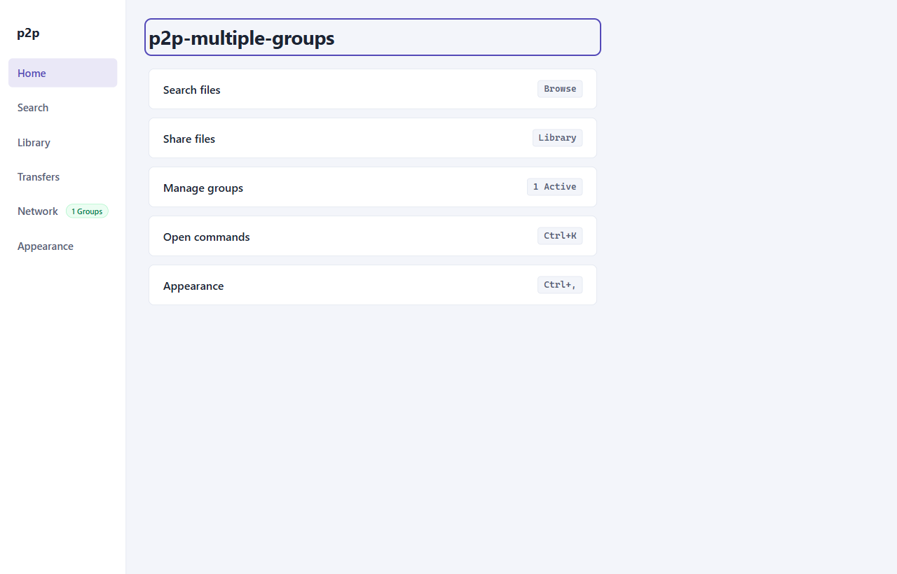

User Guide: Getting Started
This guide walks you through setting up and launching the p2p-multiple-groups desktop application, navigating its interface, and using global productivity shortcuts.
1. System Requirements
Before running the application, ensure your host environment satisfies the following minimum requirements:
- Node.js: Version
>=24.12.0is strictly enforced viapackage.jsonengines. The runtime was verified against Nodev24.18.0. - Operating System:
- Windows 10/11 (64-bit)
- macOS 12 Monterey or newer (Intel & Apple Silicon)
- Linux (Ubuntu 22.04 LTS+, Fedora 38+, or Debian 12+) with DBus and Secret Service installed for secure credential persistence.
- Network Ports: Outbound WebSocket access to the configured signaling port (default
8787) and UDP/TCP ports for WebRTC direct or relayed media/data channels.
Node.js 24 is required because the project leverages modern V8 features and the native node:test framework.
2. Installation & Setup
Step 1: Clone the Repository
git clone https://github.com/your-org/p2p-multiple-groups.git
cd p2p-multiple-groupsStep 2: Install Dependencies
npm installStep 3: Compile Application Bundles
The project uses electron-vite with three compilation targets (main, preload, and renderer):
npm run buildThis runs static TypeScript checks for Node and Web environments, compiling output assets to ./out/main/, ./out/preload/, and ./out/renderer/.
Step 4: Launch the Application
- Development Mode (with Hot Module Replacement):
npm run dev - Production Preview:
npm run start
3. Desktop UI Structure
The desktop interface adheres to modern accessible desktop conventions. It is partitioned into two primary functional areas:

Navigation Rail (Left Sidebar)
The left navigation rail provides instant access to the application's core views:
- Home: Overview of network connectivity, quick-access triggers for search, sharing, groups, and command palette.
- Search: Scoped multi-group search engine to locate files across connected peers.
- Library: Local shared directory manager with background SHA-256 fingerprinting and group access grant controls.
- Transfers: Active transfer monitor tracking chunk streams, download speeds, and route types (Direct vs TURN relay).
- Network: Virtual group membership manager, connection status, peer rosters, and supernode assignment inspector.
- Appearance: Theme customization engine (System, Dark, Light).
Main Workspace (Center Viewport)
The active view renders dynamically within the central workspace #workspace-main. Upon switching views, focus is automatically transferred to the view's primary heading (workspaceHeadingRef), ensuring screen reader compatibility and accessible keyboard navigation.
4. Keyboard Shortcuts & Command Palette
p2p-multiple-groups includes a full keyboard-driven navigation system.
Command Palette (Ctrl+K / Cmd+K)
Pressing Ctrl+K (Windows/Linux) or Cmd+K (macOS) opens the global command palette modal:
- Filter commands by typing keywords (e.g.,
Search,Library,Theme,Network). - Use ArrowUp and ArrowDown to navigate results.
- Press Enter to execute the selected command.
- Press Escape to dismiss the palette and return focus to your previous active element.
Default Keybindings
| Shortcut (Win / Linux) | Shortcut (macOS) | Action | Target View / Event |
|---|---|---|---|
Ctrl+K |
Cmd+K |
Toggle Command Palette | Opens Command Palette dialog |
Ctrl+, |
Cmd+, |
Preferences | Switches to Appearance view |
Escape |
Escape |
Dismiss Modal / Cancel | Closes dialogs or active modals |
5. Next Steps
Now that your client is running, proceed to join a virtual group or set up your shared library:
- 02. Network & Virtual Groups — Learn how to join groups using cryptographic invitations.
- 03. Library & File Grants — Add local files and manage group permissions.
- 06. Signaling Server Operations — Host your own local signaling server.